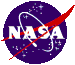

National Aeronautics and Space Administration
NASA History Office

The Apollo 14 Flight Journal
David Woods and Ronald Hansen
Additional work by Lennie Waugh.
Welcome to this 28 December 2005 release of the Apollo 14 Flight Journal, the companion to the
Apollo Lunar Surface Journal.
Like the Surface Journal, it is intended to be a resource for all those interested in the Apollo flights to the Moon, whether in a passing or scholarly capacity.
This journal covers the flight of Apollo 14, from launch to splashdown. As a "living document" it will continue to grow and evolve and major changes will be intimated in the appropriate sci.space newsgroups. It is the current intention of the authors to bring all the manned Apollo flights to this site.
Also available:
Apollo 8 Flight Journal.
Apollo 12 Flight Journal.
Apollo 15 Flight Journal.
Apollo 16 Flight Journal.
Apollo 14
Travelling from the Earth to the Moon
Lunar Orbit
Homeward journey to Earth
Apollo 14 Documents
Journal Essays
Correspondence regarding corrections, additions and typographic errors are welcome and should be sent to David Woods at  . The most recent updates to the Journal are listed in the updates file.
. The most recent updates to the Journal are listed in the updates file.
The corrected transcript, commentary, and other text incorporated in the Apollo Flight Journal is protected by copyright. No portion of the Journal may be reproduced or copied onto any medium (except as required by browsing software) without express permission from the authors. Specifically, the unauthorized creation of personal copies, or of copies for sale is prohibited. Unauthorized commercial use of the Apollo Flight Journal is prohibited; and the commercial use of the name or likeness of any of the astronauts without his express permission is prohibited.
The United States Government retains a non-exclusive, royalty-free license to publish or reproduce the published form of the Apollo Flight Journal, or to allow others to do so, for U.S. Government purposes.
These files are copyright © 2005. W. David Woods and Ronald Hansen.
last updated 2005-12-28